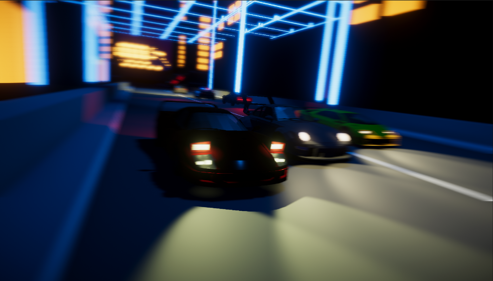

In DevelopmentUnity · C# · Vehicle Systems · AI
Open Lot: After Hours
An open-world nighttime driving experience featuring vehicle physics, artificial-intelligence traffic, camera systems, urban exploration, environmental effects, and cinematic presentation.